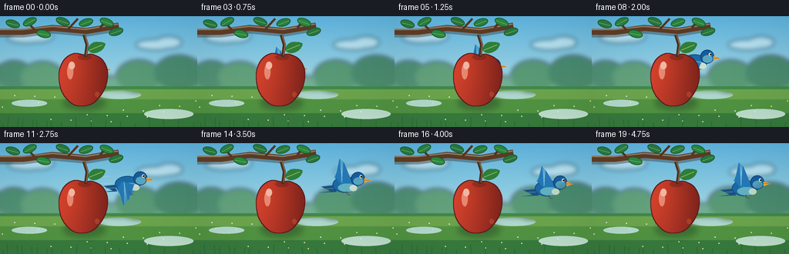
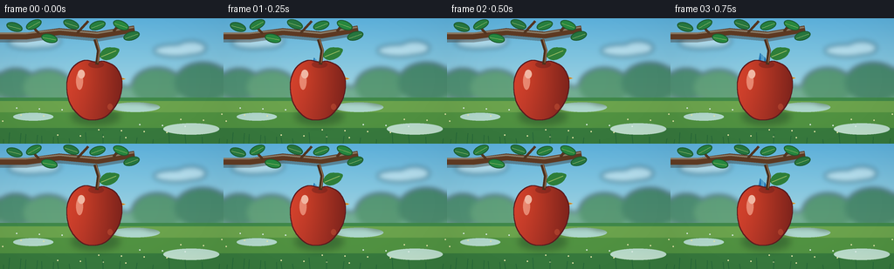

CODING AGENTS AS PIXEL WORLD MODELS
traex/GPT-5.6-Sol · dynamic_spatial_relationship_0036
点击播放 · 原生 RGB 像素
逐轮保存的候选
回放视频、检查图与代码变化。
每份候选均可单独播放。实际图片检查记录在下方工具轨迹中。
候选 01播放与检查图
点击播放 · 原生 RGB 像素


展开代码变化
--- 上一保存版本
+++ 本次保存版本
@@ -0,0 +1,320 @@
+from pathlib import Path
+import math
+
+import numpy as np
+from PIL import Image, ImageDraw, ImageFilter
+
+from artifact_io import save
+
+
+W, H, N = 256, 144, 20
+S = 4 # supersampling for smooth, polished edges
+RW, RH = W * S, H * S
+ROOT = Path(__file__).resolve().parent
+
+
+def sc(v):
+ return int(round(v * S))
+
+
+def box(coords):
+ return tuple(sc(v) for v in coords)
+
+
+def pts(seq):
+ return [(sc(x), sc(y)) for x, y in seq]
+
+
+def catmull_closed(control, samples=12):
+ """Smooth closed polygon through control points."""
+ result = []
+ n = len(control)
+ for i in range(n):
+ p0 = np.array(control[(i - 1) % n], float)
+ p1 = np.array(control[i], float)
+ p2 = np.array(control[(i + 1) % n], float)
+ p3 = np.array(control[(i + 2) % n], float)
+ for j in range(samples):
+ t = j / samples
+ q = 0.5 * ((2 * p1) + (-p0 + p2) * t
+ + (2*p0 - 5*p1 + 4*p2 - p3) * t*t
+ + (-p0 + 3*p1 - 3*p2 + p3) * t*t*t)
+ result.append(tuple(q))
+ return result
+
+
+def ellipse(draw, b, fill, outline=None, width=1):
+ draw.ellipse(box(b), fill=fill, outline=outline, width=sc(width))
+
+
+def line(draw, xy, fill, width=1):
+ draw.line(pts(xy), fill=fill, width=sc(width), joint="curve")
+
+
+def polygon(draw, xy, fill):
+ draw.polygon(pts(xy), fill=fill)
+
+
+def make_background(frame):
+ # A warm orchard morning: gradient sky and meadow are generated explicitly.
+ yy = np.linspace(0, 1, RH, dtype=np.float32)[:, None, None]
+ top = np.array([91, 174, 216], np.float32)[None, None, :]
+ mid = np.array([200, 228, 219], np.float32)[None, None, :]
+ base = top * (1 - yy) + mid * yy
+ arr = np.repeat(base, RW, axis=1)
+ img = Image.fromarray(np.clip(arr, 0, 255).astype(np.uint8), "RGB")
+
+ # Distant, deliberately soft shapes keep the subjects easy to read.
+ far = Image.new("RGBA", (RW, RH), (0, 0, 0, 0))
+ d = ImageDraw.Draw(far)
+ cloud_shift = frame * 0.10
+ for cx, cy, rx, ry in [(34, 28, 25, 7), (51, 26, 18, 8),
+ (201, 37, 25, 7), (219, 34, 17, 8)]:
+ d.ellipse(box((cx-rx+cloud_shift, cy-ry, cx+rx+cloud_shift, cy+ry)),
+ fill=(255, 255, 250, 105))
+
+ # Far hills.
+ d.polygon(pts([(0, 92), (0, 79), (33, 66), (66, 80), (104, 62),
+ (145, 79), (184, 64), (225, 77), (256, 66), (256, 98)]),
+ fill=(90, 151, 108, 175))
+ # Distant orchard tree masses.
+ for cx, cy, rx, ry, col in [
+ (18, 76, 24, 18, (53, 119, 77, 190)),
+ (55, 79, 28, 20, (72, 137, 79, 180)),
+ (180, 78, 29, 21, (62, 128, 75, 185)),
+ (232, 74, 32, 23, (46, 111, 69, 190)),
+ ]:
+ d.ellipse(box((cx-rx, cy-ry, cx+rx, cy+ry)), fill=col)
+ far = far.filter(ImageFilter.GaussianBlur(sc(3.0)))
+ img = Image.alpha_composite(img.convert("RGBA"), far)
+
+ ground = Image.new("RGBA", (RW, RH), (0, 0, 0, 0))
+ g = ImageDraw.Draw(ground)
+ g.rectangle(box((0, 91, 256, 144)), fill=(62, 133, 72, 255))
+ # layered grass gradients
+ for y, color in [(95, (105, 160, 75, 255)), (108, (79, 143, 64, 255)),
+ (126, (54, 119, 60, 255))]:
+ g.rectangle(box((0, y, 256, 145)), fill=color)
+ # soft sun patches and small flowers
+ for cx, cy, rx in [(38, 113, 23), (155, 102, 28), (219, 127, 32)]:
+ g.ellipse(box((cx-rx, cy-rx*.20, cx+rx, cy+rx*.20)),
+ fill=(166, 186, 80, 36))
+ for i in range(21):
+ x = (i * 47 + 19) % 256
+ y = 103 + ((i * 31) % 37)
+ color = (255, 231, 133, 155) if i % 3 else (239, 243, 236, 170)
+ g.ellipse(box((x-0.8, y-0.8, x+0.8, y+0.8)), fill=color)
+ img = Image.alpha_composite(img, ground)
+
+ # Subtle foreground depth/vignette.
+ a = np.asarray(img.convert("RGB")).astype(np.float32)
+ Y, X = np.mgrid[0:RH, 0:RW]
+ radial = ((X - RW*.50)/(RW*.75))**2 + ((Y - RH*.48)/(RH*.92))**2
+ shade = np.clip(1.035 - 0.10*radial, .87, 1.03)[..., None]
+ return Image.fromarray(np.clip(a*shade, 0, 255).astype(np.uint8), "RGB").convert("RGBA")
+
+
+def draw_branch_and_back_leaves(img, frame):
+ layer = Image.new("RGBA", (RW, RH), (0, 0, 0, 0))
+ d = ImageDraw.Draw(layer)
+ sway = math.sin(frame * .30) * .35
+ # branch shadow, then bark body and highlight
+ line(d, [(-8, 23), (31, 23), (68, 18), (112, 22), (154, 15)],
+ (49, 35, 25, 90), 9)
+ line(d, [(-8, 20), (31, 20), (68, 15), (112, 19), (154, 12)],
+ (93, 57, 34, 255), 8)
+ line(d, [(-7, 17), (30, 17), (68, 13), (111, 17), (153, 10)],
+ (151, 97, 52, 180), 2)
+ # twigs
+ line(d, [(45, 18), (33, 5)], (83, 53, 32, 255), 3)
+ line(d, [(88, 17), (101, 3)], (83, 53, 32, 255), 3)
+ line(d, [(130, 15), (139, 3)], (83, 53, 32, 255), 3)
+ # Leaves behind everything, with a tiny natural sway.
+ leaves = [(17, 10, -18), (39, 7, 25), (57, 23, -14), (82, 7, -22),
+ (112, 8, 17), (139, 8, -23), (151, 20, 16)]
+ for k, (x, y, ang) in enumerate(leaves):
+ cx = x + sway * (1 + k*.07)
+ leaf = Image.new("RGBA", (sc(24), sc(16)), (0, 0, 0, 0))
+ ld = ImageDraw.Draw(leaf)
+ ld.ellipse((sc(2), sc(3), sc(21), sc(13)),
+ fill=(38, 117 + (k%3)*9, 62, 255), outline=(28, 88, 45, 255), width=sc(1))
+ ld.line((sc(4), sc(9), sc(19), sc(8)), fill=(152, 183, 91, 220), width=sc(.65))
+ leaf = leaf.rotate(ang, resample=Image.Resampling.BICUBIC, expand=True)
+ layer.alpha_composite(leaf, (sc(cx)-leaf.width//2, sc(y)-leaf.height//2))
+ img.alpha_composite(layer)
+
+
+def bird_position(i):
+ if i <= 4:
+ # An unmistakable first beat: the bird is centered behind the apple.
+ return 111 + .45*math.sin(i*1.4), 72 + .45*math.cos(i*1.2)
+ u = (i - 4) / 12.0
+ if u <= 1:
+ e = u*u*(3 - 2*u)
+ x = 111 + 88*e
+ y = 72 - 16*e - 12*math.sin(math.pi*u)
+ return x, y
+ # Settle into a hover well to the right.
+ return 199 + 1.2*math.sin((i-16)*1.1), 56 + .7*math.cos((i-16)*1.4)
+
+
+def draw_speed_trails(img, i, x, y):
+ if not (7 <= i <= 13):
+ return
+ lay = Image.new("RGBA", (RW, RH), (0, 0, 0, 0))
+ d = ImageDraw.Draw(lay)
+ strength = int(60 * math.sin(math.pi*(i-7)/7))
+ for k, (dy, ln) in enumerate([(-7, 15), (2, 22), (10, 12)]):
+ line(d, [(x-22-ln, y+dy), (x-22, y+dy-.7)],
+ (224, 244, 241, max(0, strength-8*k)), 1)
+ img.alpha_composite(lay)
+
+
+def draw_bird(img, i, x, y):
+ """A detailed blue songbird, side-on and always facing its destination."""
+ layer = Image.new("RGBA", (RW, RH), (0, 0, 0, 0))
+ d = ImageDraw.Draw(layer)
+ phase = math.sin(i * math.pi * .88)
+ # Grounding shadow under bird is only a tiny depth cue, not a contact shadow.
+ # Tail feathers trail left.
+ polygon(d, [(x-13, y+3), (x-32, y+5), (x-20, y+11), (x-34, y+13),
+ (x-12, y+12)], (27, 81, 130, 255))
+ line(d, [(x-29, y+8), (x-12, y+7)], (75, 142, 180, 220), 1)
+
+ # Far wing changes silhouette on every beat.
+ wing_up = 19 * phase
+ if phase >= 0:
+ farwing = [(x-6, y+1), (x-15, y-7), (x-9, y-15-wing_up*.45),
+ (x+2, y-6-wing_up*.62), (x+9, y+2)]
+ else:
+ farwing = [(x-6, y), (x-16, y+7), (x-7, y+17-wing_up*.42),
+ (x+5, y+14-wing_up*.25), (x+9, y+3)]
+ polygon(d, farwing, (47, 130, 179, 255))
+ line(d, farwing[1:4], (113, 187, 208, 190), 1)
+
+ # Body with layered belly gives volume.
+ ellipse(d, (x-17, y-8, x+16, y+13), (26, 105, 165, 255), (18, 74, 126, 255), 1)
+ ellipse(d, (x-10, y+1, x+14, y+12), (97, 175, 193, 255))
+ ellipse(d, (x+5, y+3, x+15, y+11), (214, 228, 206, 210))
+
+ # Near wing, a bold feathered shape.
+ if phase >= 0:
+ wing = [(x-7, y+1), (x-13, y-7), (x-8, y-24-wing_up*.45),
+ (x-2, y-17-wing_up*.55), (x+5, y-8), (x+8, y+1)]
+ else:
+ wing = [(x-8, y-1), (x-13, y+7), (x-6, y+24-wing_up*.40),
+ (x+1, y+18-wing_up*.28), (x+8, y+3)]
+ polygon(d, wing, (35, 119, 181, 255))
+ # Feather ribs
+ tip = wing[2]
+ for frac in (.25, .48, .70):
+ tx = tip[0] + (wing[3][0]-tip[0])*frac
+ ty = tip[1] + (wing[3][1]-tip[1])*frac
+ line(d, [(x-5, y), (tx, ty)], (111, 183, 211, 190), .75)
+
+ # Round head, eye patch and beak are high-contrast recognition anchors.
+ ellipse(d, (x+7, y-14, x+25, y+4), (22, 92, 155, 255), (16, 65, 116, 255), 1)
+ ellipse(d, (x+10, y-7, x+23, y+3), (69, 151, 181, 180))
+ ellipse(d, (x+18, y-10, x+22, y-6), (245, 247, 224, 255))
+ ellipse(d, (x+19.1, y-9.2, x+21.7, y-6.7), (17, 23, 28, 255))
+ ellipse(d, (x+19.4, y-9, x+20.2, y-8.2), (255, 255, 255, 255))
+ polygon(d, [(x+24, y-6), (x+33, y-3), (x+24, y)], (236, 163, 52, 255))
+ line(d, [(x+24.5, y-3.3), (x+31, y-3)], (129, 77, 30, 230), .65)
+
+ # Feet tucked for flight.
+ line(d, [(x+1, y+11), (x+2, y+15), (x+6, y+16)], (103, 66, 38, 220), 1)
+ img.alpha_composite(layer)
+
+
+def apple_mask_and_fill():
+ control = [(110, 51), (96, 49), (83, 58), (77, 76), (81, 98),
+ (94, 113), (108, 116), (122, 111), (135, 94), (139, 73),
+ (132, 57), (119, 50)]
+ smooth = catmull_closed(control, 14)
+ mask = Image.new("L", (RW, RH), 0)
+ ImageDraw.Draw(mask).polygon(pts(smooth), fill=255)
+
+ Y, X = np.mgrid[0:RH, 0:RW]
+ lx, ly = sc(93), sc(67)
+ dist = np.sqrt(((X-lx)/sc(55))**2 + ((Y-ly)/sc(75))**2)
+ side = np.clip((X/sc(1)-78)/64, 0, 1)
+ red = 218 - 70*side - 29*np.clip(dist, 0, 1)
+ green = 58 - 25*side + 10*(1-np.clip(dist, 0, 1))
+ blue = 44 - 17*side
+ rgb = np.stack([red, green, blue], axis=-1)
+ rgb = np.clip(rgb, 0, 255).astype(np.uint8)
+ fill = Image.fromarray(rgb, "RGB").convert("RGBA")
+ fill.putalpha(mask)
+ return fill, mask
+
+
+APPLE_FILL, APPLE_MASK = apple_mask_and_fill()
+
+
+def draw_apple_foreground(img, frame):
+ # Soft cast shadow subtly separates this foreground apple from the bird.
+ shadow = Image.new("RGBA", (RW, RH), (0, 0, 0, 0))
+ sd = ImageDraw.Draw(shadow)
+ sd.ellipse(box((82, 103, 137, 122)), fill=(20, 45, 29, 90))
+ shadow = shadow.filter(ImageFilter.GaussianBlur(sc(4)))
+ img.alpha_composite(shadow)
+
+ img.alpha_composite(APPLE_FILL)
+ details = Image.new("RGBA", (RW, RH), (0, 0, 0, 0))
+ d = ImageDraw.Draw(details)
+ # Deep crease and stem.
+ ellipse(d, (101, 49, 119, 57), (101, 28, 25, 105))
+ line(d, [(111, 53), (113, 37), (109, 24)], (76, 47, 29, 255), 4)
+ line(d, [(112, 51), (114, 37), (110, 24)], (159, 103, 56, 210), 1)
+ # Attached leaf, in front of branch.
+ leafpoly = catmull_closed([(114, 43), (121, 34), (136, 35), (132, 44), (121, 48)], 8)
+ d.polygon(pts(leafpoly), fill=(46, 126, 57, 255))
+ line(d, [(116, 44), (133, 37)], (151, 184, 88, 240), 1)
+ # Gloss and small lower reflected light.
+ ellipse(d, (87, 62, 95, 82), (255, 190, 166, 145))
+ ellipse(d, (89, 59, 97, 69), (255, 228, 209, 185))
+ ellipse(d, (123, 98, 129, 105), (246, 123, 78, 65))
+ # rim, just dark enough to make the occlusion explicit
+ outline = Image.new("RGBA", (RW, RH), (0, 0, 0, 0))
+ od = ImageDraw.Draw(outline)
+ # use the mask edge as a soft inner rim
+ edge = APPLE_MASK.filter(ImageFilter.MaxFilter(sc(1)*2+1))
+ edge_arr = np.asarray(edge).astype(np.int16) - np.asarray(APPLE_MASK).astype(np.int16)
+ edge_img = Image.fromarray(np.clip(edge_arr, 0, 255).astype(np.uint8), "L")
+ rim = Image.new("RGBA", (RW, RH), (91, 27, 31, 130)); rim.putalpha(edge_img)
+ img.alpha_composite(rim)
+ img.alpha_composite(details)
+
+
+def draw_foreground_grass(img, frame):
+ lay = Image.new("RGBA", (RW, RH), (0, 0, 0, 0))
+ d = ImageDraw.Draw(lay)
+ for k in range(18):
+ x = (k*19 + 4) % 260
+ h = 5 + (k*7)%9
+ bend = math.sin(frame*.28+k)*1.1
+ line(d, [(x, 144), (x+bend, 144-h)], (30, 94, 53, 160), 1)
+ img.alpha_composite(lay)
+
+
+def make_frame(i):
+ img = make_background(i)
+ draw_branch_and_back_leaves(img, i)
+ x, y = bird_position(i)
+ draw_speed_trails(img, i, x, y)
+ # Crucial staging: the bird is rendered first, then the foreground apple.
+ # At the opening position the apple hides its body; as it moves right it emerges.
+ draw_bird(img, i, x, y)
+ draw_apple_foreground(img, i)
+ draw_foreground_grass(img, i)
+ return np.asarray(img.convert("RGB").resize((W, H), Image.Resampling.LANCZOS), dtype=np.uint8)
+
+
+def main():
+ frames = np.stack([make_frame(i) for i in range(N)], axis=0)
+ assert frames.shape == (20, 144, 256, 3) and frames.dtype == np.uint8
+ save(frames, ROOT)
+
+
+if __name__ == "__main__":
+ main()
可观测工具轨迹
实际执行的命令与返回图片。
命令 1exit 0
/bin/bash -lc "cat prompt.txt && printf '\\n--- RULES ---\\n' && cat GENERATION_RULES.md && printf '\\n--- SPEC ---\\n' && cat task_spec.json"
命令 2exit 1
/bin/bash -lc "find . -maxdepth 2 -type f -printf '%p\\n' | sort && printf '\\nTools:\\n' && command -v ffmpeg && command -v python3 && python3 - <<'PY'
try:
import cv2; print('cv2', cv2.__version__)
except Exception as e: print('no cv2',e)
try:
import PIL; print('PIL',PIL.__version__)
except Exception as e: print('no PIL',e)
PY"命令 3exit 0
/bin/bash -lc "python3 - <<'PY' for mod in ['numpy','PIL','cv2','imageio']: try: m=__import__(mod); print(mod,getattr(m,'__version__','ok')) except Exception as e: print(mod,'NO',e) PY sed -n '1,240p' artifact_io.py"
命令 4exit 0
/bin/bash -lc "python3 generate.py && ls -lh pixels.npz index.html inspection.png transition_check.png && python3 - <<'PY'
import numpy as np
from PIL import Image
z=np.load('pixels.npz')['pixels']
print('pixels',z.shape,z.dtype,'unique colors',len(np.unique(z[...,0])))
# frame differences and visible-subject sample stats
for i in range(1,20):
print(i, int(np.count_nonzero(z[:,:,i]"'!=z[:,:,i-1])))
PY'保存候选 1 份；完成命令 4 次；可验证图片返回 0 张。原始 API 响应与完整日志保留在本地。